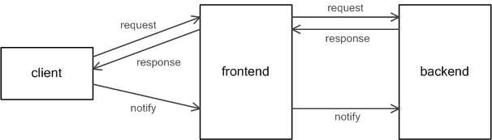

在这部分，主要介绍pomelo是如何与客户端通信以及前端服务器是如何处理用户请求的。处理客户端的请求和响应是pomelo的核心之一，它涉及到了很多组件，包括session组件，server组件，connection组件，connector组件，proxy组件，remote组件等。在本部分，我们仅仅介绍与前端服务器相关的组件，以及他们的作用，对于rpc以及后端服务器以来的backendSession以及channel，这里不做深入介绍，将在其他部分进行介绍。
对于前端服务器来说，session组件是sessionService的包装组件，用来维护用户的session信息；connection组件是connectionService的包装组件，是用来做连接统计的；connector组件会开启监听接口，承受客户端的连接，这里对connector组件底层使用的具体的connector不做太多关注，只关心其抽象行为。
对于server组件来说，会维护服务器的Handler和HandlerFilter，当用户的请求到达前端服务器时，如果前端服务器定义了相应的Handler，那么前端服务器会使用filter-handler链对其进行处理，然后将处理后的结果返回；如果对请求路由检查发现请求是发向到后端服务器的，那么前端服务器会根据用户配置的router（也可能是默认的），计算出要发往的后端服务器id，然后发起rpc调用，后端服务器在接收到rpc调用时，从其中取出请求路由以及请求参数，发起filter-handler链对请求进行处理，完成调用，并将响应发给前端服务器，前端服务器再将响应发送到客户端，整个处理流程如下如所示:
下面的类图粗略地展示了这些类之间的关系:

下面通过类时序图的方式，选取典型的用例行为，来介绍框架的控制流程:

初始化
在CoConnector的afterStart回调中，会开启socket的监听，端口使用服务器配置中的clientPort，然后就可以接受用户的连接了，并绑定了connctor的connection事件。
在CoServer的start回调里，会扫描当前服务器应该加载的Handler和HandlerFilter，并完成Handler和Filter的加载。此时已经做好了接收客户端连接的准备。
客户端连接
当客户端连接到前端服务器时，会触发connector的监听事件，在事件的处理中，会通过CoConnection增加连接信息，用来做统计。会对连接返回的用来数据通信的socket绑定message，close，error，disconnect等事件，然后创建session，session由CoSession包装的SessionService维护。每一个session都会维护与其相关的socket。此时，客户端已经完成了与服务器端的连接。
客户端请求
当客户端连接完成后，客户端就会发起请求，请求会触发socket的message事件，在此事件处理中，首先会对message事件所携带的包进行解包,然后将请求交给CoServer处理。如果请求的是前端服务器的Handler，那么CoServer的doHandle中将会发起其filter-handler链，完成请求的处理，最常见的这种请求就是用户登录请求。如果请求的路由不是前端服务器的，那么CoServer的doFoward将会发起sys rpc给相应的后端rpc。当发起sys rpc调用时，由于同类型的后端服务器一般都有很多，故需要做一个路由选择。这个路由选择策略用户可以配置，通过app.route调用，如果用户不配置的话，pomelo会使用一个默认的路由配置。后端服务器接受到请求后，会执行其CoServer的doHandle，跟前端服务器一样，会使用filter-handler链，对用户的请求进行处理，然后将响应返回给前端服务器，并由前端服务器将响应发送到客户端。
前端服务器会调用connector的send函数将响应或者推送的消息发送给客户端，send调用不会直接将要发送的消息通过socket直接发送给客户端，而是将发送任务调度给CoPushScheduler，CoPushScheduler可以实现具体的发送策略。pomelo中提供了两种方式的pushScheduler，direct会立即将用户的响应发送给用户，buffer则会缓冲发送任务，并按时冲刷，pomelo默认使用的是direct的方式，如果想使用buffer的方式，可以通过如下的调用启用:
app.set('pushSchedulerConfig', {scheduler: pomelo.pushSchedulers.buffer, flushInterval: 20});这里，flushInterval是定时冲刷的周期，我们也可以自己定制实现相应的scheduler，并配置到应用程序中。
- 当服务器的请求处理逻辑需要给客户端推送消息时，会通过用户的uid或者session id从SessionService里获得到对应的Session，session中会维护与客户端用来数据通信的socket，然后将要推送的数据通过session维护的socket连接发送到客户端。
绑定/解绑用户
一般来说，当session连接完成后，都会有用户登录的请求，从而完成session与具体用户的绑定。一般在CoServer的处理中，当会将相应的用户绑定到session上，此时会调用CoSession包装的SessionService的操作bind完成对应的用户绑定操作。此外，还会调用CoConnection的addLoginedUser来增加用户，维护统计信息。
对于用户注销的请求，一般在CoServer的处理中，会完成session与uid的解绑，此时会调用CoSession包装的SessionService的操作unbind完成对应用户的解绑操作。此外，还会调用CoConnection的removeLoginedUser来减少登录用户，维护统计信息。
客户端断开
当客户端断开连接时，connector监听的socket上会激发disconnect事件，在具体的事件处理中，会从SessionService中删除掉对应的Session，释放掉session维护的连接，还会调用ConnectionService上decreaseConnectionCount，维护统计信息。
上面选取了客户端与服务器交互的几个典型行为，说明了整个客户端请求中的控制流程。这里仅仅涉及到了前端服务器，对于后端服务器的具体处理，这里仅仅提到了会发起rpc调用，而没有具体地深入介绍。
Pomelo中的请求处理链
在pomelo中，HandlerFilter分为beforeFilter和afterFilter，对于beforeFilter来说,其方法签名为
before(msg, session, next);
其中msg是请求，session表示当前请求的session，在前端服务器的话是FrontendSession，在后端服务器的话是BackendSession，next是用来组成请求链的，是用来指定下一步调用的。如果在具体的filter上没有错误的话，那么就直接调用next(), 否则，则调用next(err, resp),向后面传递具体的处理错误以及响应。在filter的具体实现中，在逻辑处理完后，必须调用next，否则将打断整个处理链。如果有任意一个beforeFilter的next调用中传递了err的话，此处理链将会立即被中断，直接会转入错误处理。在next传递err的时候，可以携带一个resp参数，作为对客户端错误的响应，即next(err, resp)。
具体Handler的签名一般为：
<handler_Name>(msg, session, next);
msg是经过beforeFilter链处理过的msg，session是经过beforeFilter链处理后的session，next是下一步处理。如果需要给客户端响应的话，没有错误的话，使用next(null, resp),否则可以使用next(err, resp),向后面传递错误信息。这里，resp是给客户端的响应，一般来说客户端的响应都是在Handler的具体逻辑中生成。在具体Handler的实现中，也必须调用next。其next语义与前面的beforeFilter中的next语义一致。
对于afterFilter来说，其方法签名为:
after(err, msg, session, resp, next);
afterFilter是做一些清理操作的，在执行afterFilter链的时候，具体的响应已经发送给了客户端，也就是说在afterFilter如果对resp做更改的话，将对客户端响应没有任何影响。同样，这里的next参数，也是指定了下一步的处理,其签名是next(err),不过与上面beforeFilter和Handler不同的是，由于在afterFilter中常做的是一些清理操作，而且此时具体的响应resp已经发送到了客户端，所以afterFilter中，处理链对err将不再敏感，无论是否有err，整个afterFilter链都会执行完毕。
ErrorHandler，是当在处理请求时产生异常时进行的处理，具体的签名为:
<errorHandler_Name>(err, msg, resp, session, cb);
在beforeFilter或者Handler中，如果处理产生错误，那么将会转向错误处理，ErrorHandler就是用来进行错误处理的，具体的参数意义跟上面的一样，其中resp是由前面产生错误的next(err, resp)调用传递来的，cb的签名为cb(err, resp),cb会将resp发送给客户端。因此在ErrorHandler里面，是需要调用cb(err, resp), 否则，客户端将得不到服务器端的响应。在errorHandler中可以根据传入的resp以及err信息，重新生成要发送给客户端的resp。通过如下方式设置全局的ErrorHandler，
var errorHandler = require('<path');
app.set('errorHandler', errorHandler);
如果用户没有配置全局的errorHandler的话，默认的errorHandler会向客户端返回由beforeFilters或者Handler产生的resp。整个请求处理链的大致流程如下：

pomelo内建filter
pomelo内建了常见的一些filter，用户可以通过如下的方式启用:
app.filter(pomelo.filters.<filterName>(<args>));
下面介绍一下这几个fitler:
serial
这个filter是用来对用户请求做串行化的，可以使得用户的请求只有在第一个请求被处理完后，才会处理第二个请求。serial中使用了一个taskManager，当用户请求到来时，在beforeFilter中，将用户的请求放到taskManager中，taskManager中维护着一个task队列。在对应的afterFilter中，如果taskManager还有未处理的请求，将会处理其请求，即在一个请求的afterFilter里启动在taskManager中还没处理的下一个请求，这样就实现了请求的序列化。
timeout
这个filter是用来对服务端处理超时进行警告的，在beforeFilter中会启动一个定时器，在afterFilter中清除。如果在其定时器时间内，afterFilter被调用，定时器将会被清除，因此不会出现超时警告。如果定时器超时时，afterFilter还没有执行到，则会引发超时警告,并记录日志。默认的处理超时是3秒，可以在加载timeout的时候作为参数传入。
time
这个filter使用来记录服务器处理时间的，在beforeFilter中会记录一下当前的时间戳，在afterFilter中再次获取当前的时间戳，然后两个时间戳相减，得到整个处理时间，然后记录日志。
toobusy
这个filter中，一旦检测到node.js中事件循环的请求等待队列过长，超过一个阀值时，就会触发toobusy。一旦触发了toobusy，那么toobusy的filter中将终止此请求处理链，并在next调用中，传递错误参数。
总结
在本部分，介绍了前端服务器与客户端的通信的相关内容，讲述了相关的类关系，以及典型用例行为的控制流程。对于请求响应链中的before filter，handler，after fitler，error handler等做了较为详细的分析，最后简单分析了一下pomelo内建提供的一些filter。